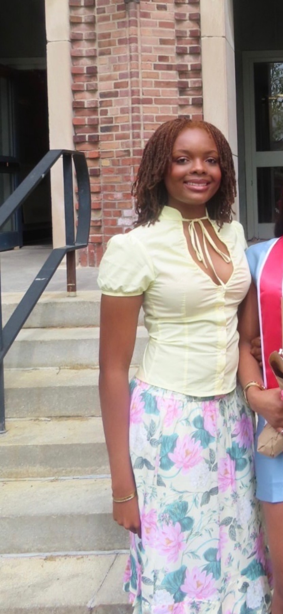

C:\USERS\OLUCHI\PORTFOLIO>
Hi, I’m
Oluchi :)
I study Computer Science and Business at Emory. I build mobile apps, work on machine learning projects, and usually have another idea open in a tab somewhere.
C:\USERS\OLUCHI\PORTFOLIO>
I study Computer Science and Business at Emory. I build mobile apps, work on machine learning projects, and usually have another idea open in a tab somewhere.

scroll to explore ↓
oluchi@portfolio:~$ ls ./projects
A volunteer and giving app I co-built, now with a web version. Browse 79 nonprofits, find causes that fit your interests, save organizations and connect with people who want to volunteer together. The original project won the Congressional App Challenge and was displayed at the U.S. Capitol.
Search and filter organizations; see why they match your interests; follow favorites; use Helping Pair with connection requests; choose whether your profile is discoverable.
Try this: Pick a cause, narrow the results, then find one organization you would actually help. Helping Pair needs accounts and an accepted request.
Donations and volunteering continue on the organizations’ official websites. ShareCompass does not process payments.
My current AI Studio project. My team is building a layer that checks prompt risk, catches unsafe requests, estimates cost, routes prompts to an appropriate model, and avoids repeat calls through semantic caching.
I started by asking whether a model could recognize changing market conditions. Now I can pick a date, inspect its uncertainty, compare strategies and see when different model fits disagree.
Historical date explorer; probabilities; strategy curves, drawdowns and costs; uncertainty filters; state history; training windows; JSON downloads.
Try this: Choose two different dates, compare their probabilities, then open Reliability and find a period where the models disagree.
Explore historical results here. The Python project includes the training pipeline.
My first solo app. I’m building on its original purple design: medication schedules, taken or missed check-ins, symptom notes, calendar history and adherence graphs. You can also scan a label, track refills and share a PDF of your records.
Scheduled and as-needed doses; missed and skipped reasons; correction history; medication search; strength and unit selectors; pauses and date ranges; refill logs; searchable symptoms; adherence charts; label review; PDF reports.
Try this: With fictional details, record a dose, find it in the calendar, then correct it and check the history again.
Explore sample medications, dose history, symptoms and reports. Notifications require the phone app; family sharing and cloud backup are not yet available.
I’m interested in software that people can actually use, whether that is an app on someone’s phone or an ML system working behind the scenes.
Outside of class, I’m usually working on a side project, sewing, making art, learning more about markets, or convincing myself that opening one more tab will help.
toolbox/
oluchi@portfolio:~$ cat experience.log
ASOMA · ADHD platform
I recently joined ASOMA as a project engineer. I’m getting to know the product and contributing to the team building its ADHD platform.
Break Through Tech AI · Cornell Tech
Training across the full ML workflow, from cleaning data and comparing models to neural networks, computer vision, and LLM applications. This fall, I’m putting it together in an enterprise AI Studio project.
Emory University
Currently building my foundation in algorithms, data structures, statistics, economics, and the business side of how products get made.
oluchi@portfolio:~$ open ./off-duty
Okay, sometimes the laptop is still open.

Staying up until 3 am watching A Different World. Just one more episode.

Trying new matcha spots around Atlanta, hoping I’ll like at least one.

Trying to come up with a Halloween costume. Currently accepting suggestions.